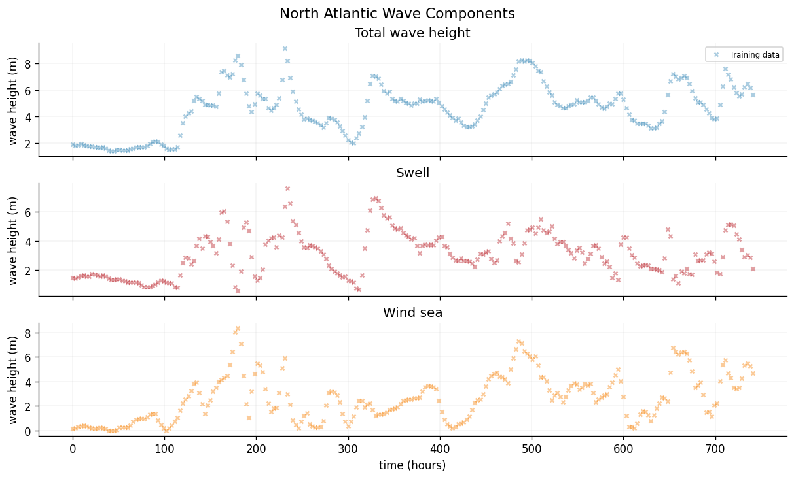
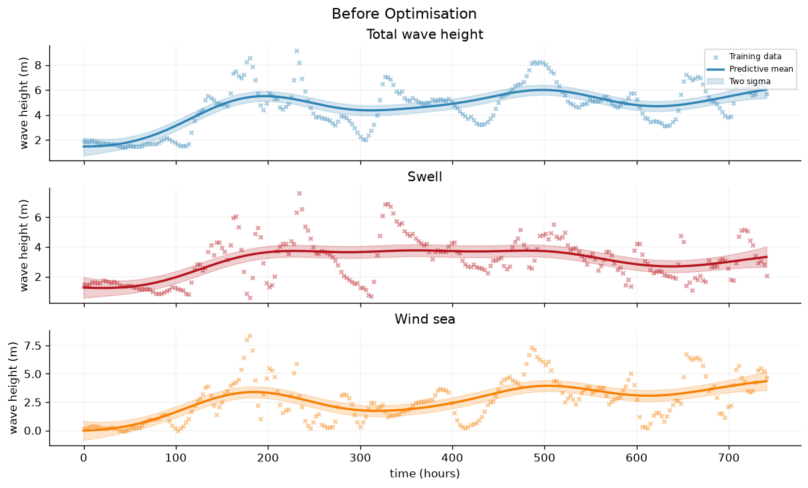
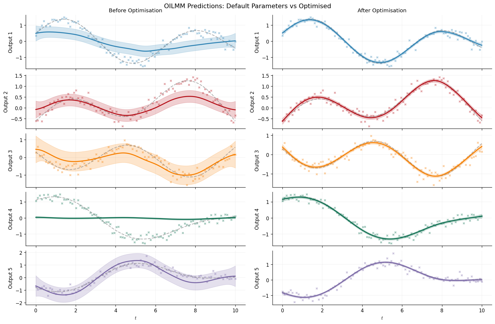
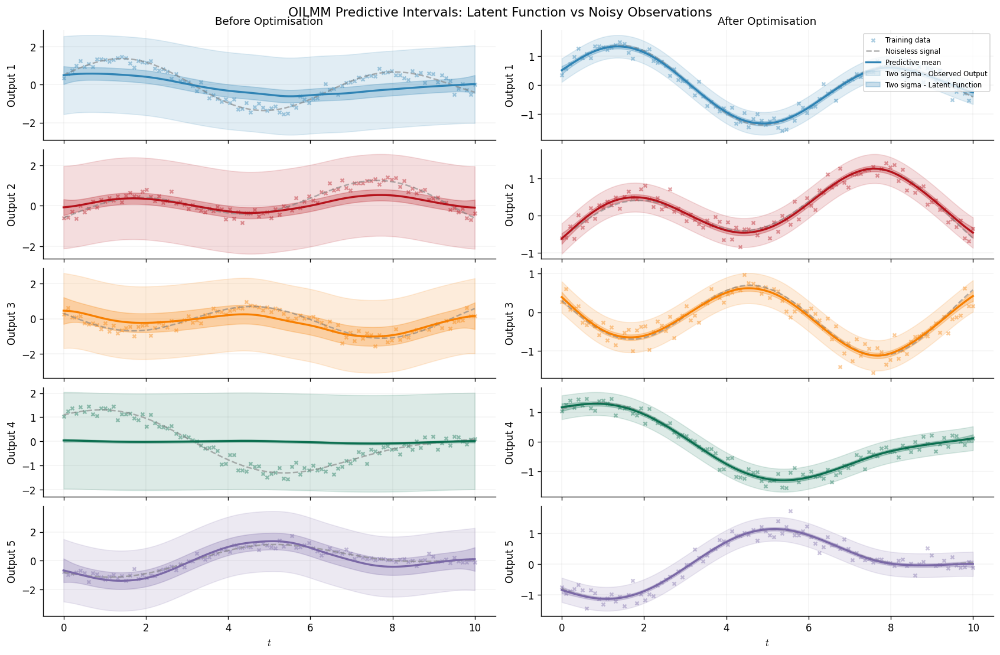
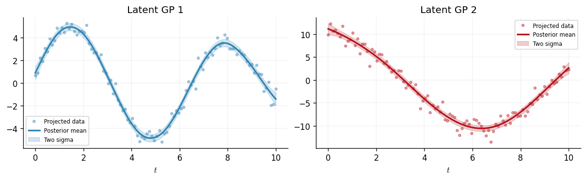

Scalable Multi-Output GPs with OILMM
The multi-output notebook introduces the Intrinsic Coregionalisation Model (ICM) and the Linear Model of Coregionalisation (LCM), which capture cross-output correlations through coregionalisation matrices. Both approaches form the full joint covariance over all \(n\) inputs and \(p\) outputs. In the general case (LCM with \(Q > 1\) components) this costs \(\mathcal{O}((np)^3)\); even the single-component ICM, which enjoys Kronecker structure, still requires \(\mathcal{O}(n^3 + p^3)\). When \(p\) is large, both become prohibitive expensive from a computational and memory perspective.
The Orthogonal Instantaneous Linear Mixing Model (OILMM) of Bruinsma et al. (2020) resolves this bottleneck. It models the \(p\) outputs as linear mixtures of \(m \leq p\) latent Gaussian processes through a mixing matrix \(\mathbf{H}\) whose columns are mutually orthogonal. This orthogonality causes the projected observation noise to be diagonal, which in turn allows inference to decompose into \(m\) independent single-output GP problems. The overall cost drops to \(\mathcal{O}(n^3 m)\) — linear in the number of latent processes and entirely independent of \(p\).
This notebook derives the OILMM mathematics step by step, implements a five-output example in GPJax, optimises the model's parameters via the OILMM log marginal likelihood, and visualises the model's predictions.
from examples.utils import plot_output_panel, use_mpl_style
from jax import config
import jax.numpy as jnp
import jax.random as jr
from jaxtyping import install_import_hook
import matplotlib as mpl
import matplotlib.pyplot as plt
config.update("jax_enable_x64", True)
with install_import_hook("gpjax", "beartype.beartype"):
import gpjax as gpx
key = jr.key(123)
use_mpl_style()
cols = mpl.rcParams["axes.prop_cycle"].by_key()["color"]
The linear mixing model
A common formulation for multi-output GPs assumes that the \(p\)-dimensional output vector is generated by linearly mixing \(m\) independent latent GPs:
where - \(\mathbf{x}(t) = \bigl(x_1(t),\ldots,x_m(t)\bigr)^\top\) collects \(m\) independent latent GPs, each with kernel \(k_i\), - \(\mathbf{H} \in \mathbb{R}^{p \times m}\) is the mixing matrix that maps from latent space to output space, and - \(\boldsymbol{\varepsilon}(t) \sim \mathcal{N}\bigl(\mathbf{0},\,\sigma^2 \mathbf{I}_p\bigr)\) is i.i.d. observation noise.
Given \(n\) input locations, we stack all observations into a vector \(\bar{\mathbf{y}} \in \mathbb{R}^{np}\). Its joint covariance is
where \(\mathbf{K}_i\) is the \(n \times n\) Gram matrix of the \(i\)-th latent kernel. Inverting this \(np \times np\) matrix naively costs \(\mathcal{O}(n^3 p^3)\), which is impractical when \(p\) is even moderately large.
The OILMM parameterisation
OILMM constrains \(\mathbf{H}\) to have orthogonal columns by writing
where \(\mathbf{U} \in \mathbb{R}^{p \times m}\) has orthonormal columns (\(\mathbf{U}^\top\mathbf{U} = \mathbf{I}_m\)) and \(\mathbf{S} = \operatorname{diag}(s_1,\ldots,s_m)\) with each \(s_i > 0\) is a positive diagonal scaling matrix.
The corresponding projection matrix is the left pseudo-inverse of \(\mathbf{H}\):
Applying \(\mathbf{T}\) to the observed outputs projects them into the latent space:
Diagonal projected noise
The crux of OILMM is that the projected noise \(\tilde{\boldsymbol{\varepsilon}} = \mathbf{T}\,\boldsymbol{\varepsilon}\) has a diagonal covariance:
Because \(\mathbf{S}\) is diagonal, the projected noise components are independent: the \(i\)-th latent observation has noise variance \(\sigma^2/s_i\). This is the result that makes OILMM tractable.
GPJax additionally supports per-latent heterogeneous noise \(\mathbf{D} = \operatorname{diag}(d_1,\ldots,d_m)\) with each \(d_i \geq 0\). Including this term, the full projected noise covariance is
which remains diagonal.
Independent latent inference
Because the projected noise is diagonal, each projected observation \(\tilde{y}_i(t) = x_i(t) + \tilde{\varepsilon}_i(t)\) constitutes a standard single-output GP regression problem with known noise variance \(\sigma^2/s_i + d_i\). We can therefore condition each latent GP independently using the standard conjugate formulae.
The cost of conditioning one GP on \(n\) observations is \(\mathcal{O}(n^3)\) (dominated by the Cholesky factorisation), so conditioning all \(m\) latent GPs costs \(\mathcal{O}(n^3 m)\). This is dramatically cheaper than the \(\mathcal{O}(n^3 p^3)\) cost of the general linear mixing model.
Reconstructing predictions in output space
After conditioning, we obtain posterior means \(\boldsymbol{\mu}_i\) and covariances \(\boldsymbol{\Sigma}_i\) for each latent GP at \(n_*\) test locations. The output-space predictive distribution is recovered by applying the mixing matrix:
When only marginal variances are needed, the Kronecker product need not be formed explicitly. The marginal variance of output \(j\) at test point \(t\) is
which costs only \(\mathcal{O}(n_* p\, m)\).
Synthetic dataset
We construct a five-output dataset driven by two latent functions: \(x_1(t) = \sin(t)\), a smooth oscillation, and \(x_2(t) = \cos(t/2)\), a slower oscillation.
The observed outputs are linear mixtures \(\mathbf{y}(t) = \mathbf{H}_{\text{true}}\,\mathbf{x}(t) + \boldsymbol{\varepsilon}\) with observation noise of standard deviation \(\sigma = 0.2\). We set \(m = 2\) latent GPs and \(p = 5\) outputs.
num_data = 100
num_outputs = 5
num_latent = 2
X_train = jnp.linspace(0, 10, num_data).reshape(-1, 1)
latent1 = jnp.sin(X_train.squeeze())
latent2 = jnp.cos(0.5 * X_train.squeeze())
# True mixing weights
true_H = jnp.array(
[
[1.0, 0.5],
[0.8, -0.6],
[-0.9, 0.3],
[0.4, 1.1],
[-0.5, -0.8],
]
)
latent_values = jnp.column_stack([latent1, latent2])
y_clean = latent_values @ true_H.T
y_train = y_clean + jr.normal(key, y_clean.shape) * 0.2
train_data = gpx.Dataset(X=X_train, y=y_train)
Each of the five outputs is a different weighted combination of the two underlying latent functions. We plot them alongside the noiseless signal.
fig, axes = plt.subplots(num_outputs, 1, figsize=(10, 1.5 * num_outputs), sharex=True)
for p in range(num_outputs):
plot_output_panel(axes[p], p, X_train, y_train, y_clean, cols)
if p == 0:
axes[p].legend(loc="upper right", fontsize=7)
axes[-1].set_xlabel(r"$t$")
plt.suptitle(
f"{num_outputs} Observed Outputs from {num_latent} Latent Sources", fontsize=13
)
Text(0.5, 0.98, '5 Observed Outputs from 2 Latent Sources')

Constructing the OILMM
GPJax provides create_oilmm_from_data, which initialises the mixing matrix
using the empirical correlation structure of the outputs. Under the hood it
first computes the empirical covariance matrix
$$
\hat{\boldsymbol{\Sigma}} = \tfrac{1}{n}\,\mathbf{Y}_c^\top\mathbf{Y}_c
$$,
where \(\mathbf{Y}_c\) is the column-centred observation matrix. The next step
extracts the top \(m\) eigenvectors and eigenvalues of \(\hat{\boldsymbol{\Sigma}}\).
The function then sets \(\mathbf{U}_{\text{latent}}\) to the eigenvectors. This
ensures that after SVD orthogonalisation the columns of \(\mathbf{U}\) align with
the principal directions of output variation. Finally, \(\mathbf{S}\) is set to
the corresponding eigenvalues giving the scaling an informative starting point.
In this final step, the eigenvalues are clamped to \(10^{-6}\) for numerical stability.
This is analogous to initialising with PCA: the first \(m\) principal components capture the most variance and provide a reasonable starting point for \(\mathbf{H}\).
model = gpx.models.create_oilmm_from_data(
dataset=train_data,
num_latent_gps=num_latent,
key=key,
kernel=gpx.kernels.Matern52(),
)
Enforcing orthogonality via SVD
The OrthogonalMixingMatrix parameter stores an unconstrained matrix
\(\mathbf{U}_{\text{latent}} \in \mathbb{R}^{p \times m}\) and projects it onto
the Stiefel manifold (the set of matrices with orthonormal columns) at each
forward pass using SVD:
This ensures \(\mathbf{U}^\top\mathbf{U} = \mathbf{I}_m\) exactly, regardless of the optimiser's updates to the unconstrained representation.
[[ 1. -0.]
[-0. 1.]]
Conditioning on observations
Before optimising any parameters, we condition with the PCA-initialised
defaults to establish a baseline. Calling condition_on_observations executes
the OILMM inference algorithm:
- Project: compute \(\tilde{\mathbf{Y}} = \mathbf{T}\,\mathbf{Y}^\top\) in \(\mathcal{O}(nmp)\).
- Condition: for each latent GP \(i\), form a single-output dataset from \(\tilde{\mathbf{y}}_i\) with noise variance \(\sigma^2/s_i + d_i\), then condition using the standard conjugate formulae in \(\mathcal{O}(n^3)\).
- Return: an
OILMMPosteriorwrapping the \(m\) independent posteriors.
Baseline predictions
We first inspect the model's output-space predictions using the default PCA-initialised parameters. This serves as a baseline against which we can later compare the optimised model.
N_test = 200
X_test = jnp.linspace(0, 10, N_test).reshape(-1, 1)
pre_pred = posterior.predict(X_test, return_full_cov=False)
pre_opt_mean = pre_pred.mean.reshape(N_test, num_outputs)
pre_opt_std = jnp.sqrt(jnp.diag(pre_pred.covariance())).reshape(N_test, num_outputs)
pre_obs_noise_var = (
model.mixing_matrix.obs_noise_variance.unwrap()
+ model.mixing_matrix.H_squared @ model.mixing_matrix.latent_noise_variance.unwrap()
)
pre_obs_std = jnp.sqrt(pre_opt_std**2 + pre_obs_noise_var[None, :])
fig, axes = plt.subplots(num_outputs, 1, figsize=(10, 1.8 * num_outputs), sharex=True)
for p in range(num_outputs):
plot_output_panel(
axes[p],
p,
X_train,
y_train,
y_clean,
cols,
X_test,
pre_opt_mean,
func_std=pre_opt_std,
)
if p == 0:
axes[p].legend(loc="upper right", fontsize=7)
axes[-1].set_xlabel(r"$t$")
plt.suptitle("Before Optimisation", fontsize=13)
Text(0.5, 0.98, 'Before Optimisation')

OILMM log marginal likelihood
We optimise the model's parameters by maximising the OILMM log marginal likelihood. Proposition 9 of Bruinsma et al. (2020) gives the exact expression:
The first three terms are correction factors that account for the deterministic projection from output space to latent space:
- Scaling penalty: penalises very large or small \(s_i\) values, preventing the model from trivially inflating the likelihood by rescaling.
- Residual noise: the log-probability of the \((p - m)\) directions orthogonal to \(\mathbf{U}\), which are explained purely by observation noise.
- Projection residual: the squared Frobenius norm of the data component that lies outside the column space of \(\mathbf{U}\), divided by \(\sigma^2\).
The final summation is simply the sum of \(m\) standard single-output GP log marginal likelihoods, each evaluated on the projected data.
GPJax implements this in oilmm_mll(model, data), which takes the
pre-conditioning OILMMModel (not a posterior) together with the training
Dataset. We negate it for minimisation with fit_scipy.
Optimisation
We maximise the OILMM log marginal likelihood using L-BFGS via fit_scipy.
The optimiser tunes all array leaves: the kernel hyperparameters
of each latent GP, the unconstrained mixing matrix \(\mathbf{U}_{\text{latent}}\),
the diagonal scaling \(\mathbf{S}\), and the noise variances (\(\sigma^2\) and \(\mathbf{D}\)).
opt_model, history = gpx.fit_scipy(
model=model,
objective=lambda m, d: -gpx.models.oilmm_mll(m, d),
train_data=train_data,
)
opt_mll = gpx.models.oilmm_mll(opt_model, train_data)
print(f"Initial MLL: {initial_mll:.3f}")
print(f"Optimised MLL: {opt_mll:.3f}")
/home/runner/work/GPJax/GPJax/.venv/lib/python3.11/site-packages/scipy/optimize/_optimize.py:1474: RuntimeWarning: invalid value encountered in scalar multiply
if (alpha_k*vecnorm(pk) <= xrtol*(xrtol + vecnorm(xk))):
/home/runner/work/GPJax/GPJax/.venv/lib/python3.11/site-packages/scipy/optimize/_minimize.py:779: OptimizeWarning: Maximum number of iterations has been exceeded.
res = _minimize_bfgs(fun, x0, args, jac, callback, **options)
Current function value: -75.663063
Iterations: 500
Function evaluations: 606
Gradient evaluations: 606
Initial MLL: -561.244
Optimised MLL: 75.663
Post-optimisation predictions
We re-condition the optimised model on the training data, then predict at the same test locations.
opt_posterior = opt_model.condition_on_observations(train_data)
post_pred = opt_posterior.predict(X_test, return_full_cov=False)
post_opt_mean = post_pred.mean.reshape(N_test, num_outputs)
post_opt_std = jnp.sqrt(jnp.diag(post_pred.covariance())).reshape(N_test, num_outputs)
post_obs_noise_var = (
opt_model.mixing_matrix.obs_noise_variance.unwrap()
+ opt_model.mixing_matrix.H_squared
@ opt_model.mixing_matrix.latent_noise_variance.unwrap()
)
post_obs_std = jnp.sqrt(post_opt_std**2 + post_obs_noise_var[None, :])
Before vs after comparison
We display the baseline (left) and optimised (right) predictions side by side for each output. The grey dashed line shows the noiseless ground-truth signal.
fig, axes = plt.subplots(num_outputs, 2, figsize=(14, 1.8 * num_outputs), sharex=True)
for p in range(num_outputs):
for j, (mean, std, title) in enumerate(
[
(pre_opt_mean, pre_opt_std, "Before Optimisation"),
(post_opt_mean, post_opt_std, "After Optimisation"),
]
):
plot_output_panel(
axes[p, j], p, X_train, y_train, y_clean, cols, X_test, mean, func_std=std
)
if p == 0:
axes[p, j].set_title(title, fontsize=11)
axes[-1, 0].set_xlabel(r"$t$")
axes[-1, 1].set_xlabel(r"$t$")
plt.suptitle("OILMM Predictions: Default Parameters vs Optimised", fontsize=13, y=1.01)
Text(0.5, 1.01, 'OILMM Predictions: Default Parameters vs Optimised')

Predictive uncertainty: latent function vs noisy observations
The previous figure shows uncertainty over the latent noise-free function \(\mathbf{f}(t) = \mathbf{H}\mathbf{x}(t)\). To visualise uncertainty over observed outputs \(\mathbf{y}(t)\), we add output-space noise:
The wider band below is the predictive standard devatiation of the noisy observations, while the narrower band is the latent function's standard deviation.
fig, axes = plt.subplots(num_outputs, 2, figsize=(14, 1.8 * num_outputs), sharex=True)
for p in range(num_outputs):
for j, (mean, fstd, ostd, title) in enumerate(
[
(pre_opt_mean, pre_opt_std, pre_obs_std, "Before Optimisation"),
(post_opt_mean, post_opt_std, post_obs_std, "After Optimisation"),
]
):
plot_output_panel(
axes[p, j],
p,
X_train,
y_train,
y_clean,
cols,
X_test,
mean,
func_std=fstd,
obs_std=ostd,
)
if p == 0:
axes[p, j].set_title(title, fontsize=11)
if p == 0 and j == 1:
axes[p, j].legend(loc="upper right", fontsize=7)
axes[-1, 0].set_xlabel(r"$t$")
axes[-1, 1].set_xlabel(r"$t$")
plt.suptitle(
"OILMM Predictive Intervals: Latent Function vs Noisy Observations",
fontsize=13,
y=1.01,
)
Text(0.5, 1.01, 'OILMM Predictive Intervals: Latent Function vs Noisy Observations')

Latent space after optimisation
The decomposition into independent single-output problems is the heart of OILMM. We plot each latent GP's projected training data \(\tilde{\mathbf{y}}_i\) alongside its posterior predictive distribution. These \(m\) panels are completely independent — each latent GP knows nothing about the others.
Note that the latent functions are identified only up to a sign/scale ambiguity: flipping the sign of a column of \(\mathbf{U}\) and the corresponding latent GP leaves the output-space predictions unchanged.
fig, axes = plt.subplots(1, num_latent, figsize=(5 * num_latent, 3), sharey=False)
for i in range(num_latent):
ax = axes[i]
lat_y = opt_posterior.latent_datasets[i].y.squeeze()
ax.plot(X_train, lat_y, "o", color=cols[i], alpha=0.4, ms=3, label="Projected data")
lat_pred = opt_posterior.latent_posteriors[i].predict(
X_test, train_data=opt_posterior.latent_datasets[i]
)
lat_mean = lat_pred.mean
lat_std = jnp.sqrt(jnp.diag(lat_pred.covariance()))
ax.plot(X_test, lat_mean, color=cols[i], linewidth=2, label="Posterior mean")
ax.fill_between(
X_test.squeeze(),
lat_mean - 2 * lat_std,
lat_mean + 2 * lat_std,
color=cols[i],
alpha=0.2,
label="Two sigma",
)
ax.set_xlabel(r"$t$")
ax.set_title(f"Latent GP {i + 1}")
ax.legend(loc="best", fontsize=7)

Each latent GP has learned a smooth function that explains the projected observations. The prediction intervals are narrow where data is dense and widen towards the boundaries. Crucially, these \(m\) regression problems were solved independently, with total cost \(\mathcal{O}(n^3 m)\).
Heterogeneous kernels
By default, passing a single kernel to OILMMModel deep-copies it \(m\) times
so that each latent GP has independent hyperparameters. If the latent
processes operate at fundamentally different characteristic scales, you can go
further and assign entirely different kernel families:
model = gpx.models.create_oilmm(
num_outputs=5, num_latent_gps=2, key=key,
kernel=[gpx.kernels.RBF(), gpx.kernels.Matern52()],
)
The first latent GP would then use an infinitely differentiable RBF kernel while the second uses the rougher Matern-5/2. This is analogous to the advantage of LCM over ICM in the multi-output setting, where different components can capture different spectral characteristics.
System configuration
Author: Thomas Pinder
Last updated: Fri, 03 Jul 2026
Python implementation: CPython
Python version : 3.11.15
IPython version : 9.9.0
gpjax : 0.16.0
jax : 0.9.0
jaxtyping : 0.3.6
matplotlib: 3.10.8
Watermark: 2.6.0
We currently have some availability for consulting on how Gaussian processes, Bayesian modelling, and GPJax can be integrated into your team's work. If this sounds relevant to your work, book an introductory call. These calls are for consulting inquiries only. For technical usage questions and free community support, please use GitHub Discussions and the documentation below.